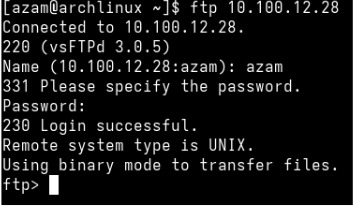

FTP sever is a very common phrase in tech world. Especially when you want to download something faster than any internet server. But, can you believe that you can setup your very own ftp server in your local network? In this blog, I am going to tell you step by step how you can set up a ftp server at home.
First, you need to install vsftpd. For that:
- arch:
sudo pacman -S vsftpd - ubuntu:
sudo apt install vsftpd
- arch:
sudo useradd -m -s /bin/bash username - ubuntu:
sudo adduser -m -s /bin/bash username
sudo passwd username
Now, we need to configure the config file for vsftpd to use the ftp server on our accordingly. Type in your termianl:
sudo vim /etc/vsftpd.conf and uncomment(remove # from the starting of each line) these 3 lines:
- write_enable=YES
- local_enable=YES
- chroot_local_user=YES
- allow_writable_chroot=YES
sudo systemctl enable vsftpdsudo systemctl start vsftpd
To access on the client machine, you need ip address of your server. to know that type ip addr show in the terminal and rememberthe ip address. Then on the client machine terminal:
Type ftp server_ip, this will promt you provide username and password you set. Once you provided all the informations correctly, you will be logged in to the server.

Since, you are connected to the server. You can now download and upload any files locally with high speed.